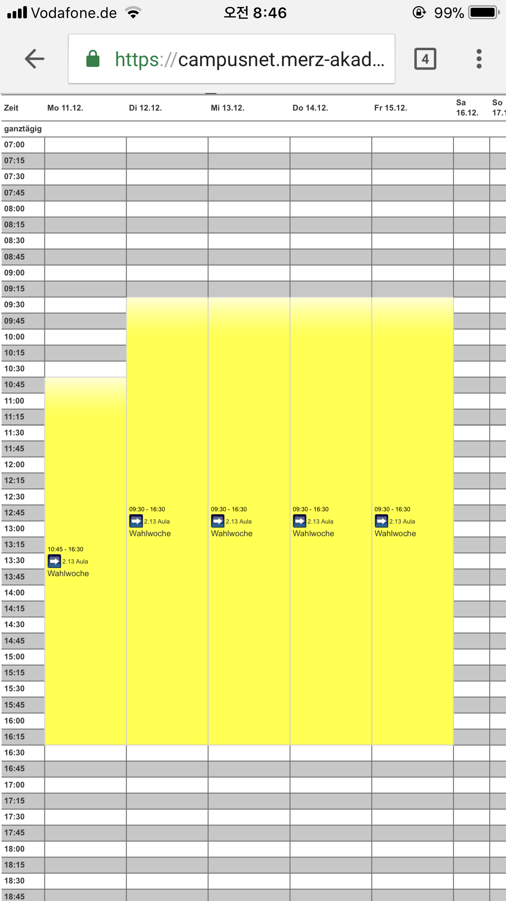
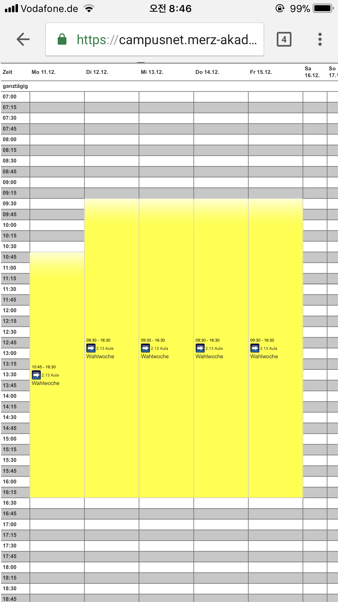

운동 열심히 해서 근육맨 돼서
물 1.5l*6도 한 손으로 번쩍 번쩍 들고
쌀 15kg도 낑낑거리지 않고 깃털처럼 들 수 있으면 좋겠다.
힘이 짱짱짱짱 세지면 좋을 것 같아요.
그리고 사실 살 많이 빠졌을 거라고 기대하고
몸무게 재봤는데 2kg빠졌더라구요!
하하하 역시 살은 쉽게 빠지지 않네요.
하지만, 먹는 것을 포기할 수는 없어.
음식은 너무 좋아요.
이제는 치킨도 직접 만들어 먹습니다!
이번주는 프로젝트 기간이라 헬이네요!
야호~!! 지옥 최고!
프로젝트를 죽도록 할 생각에
죽도록 행복한 도희에요.